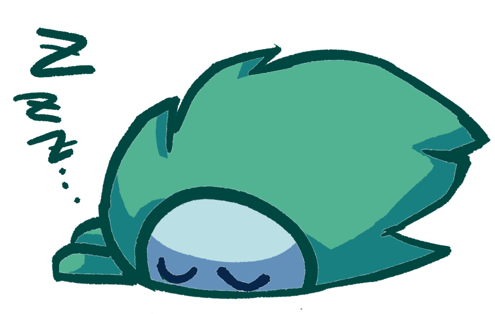
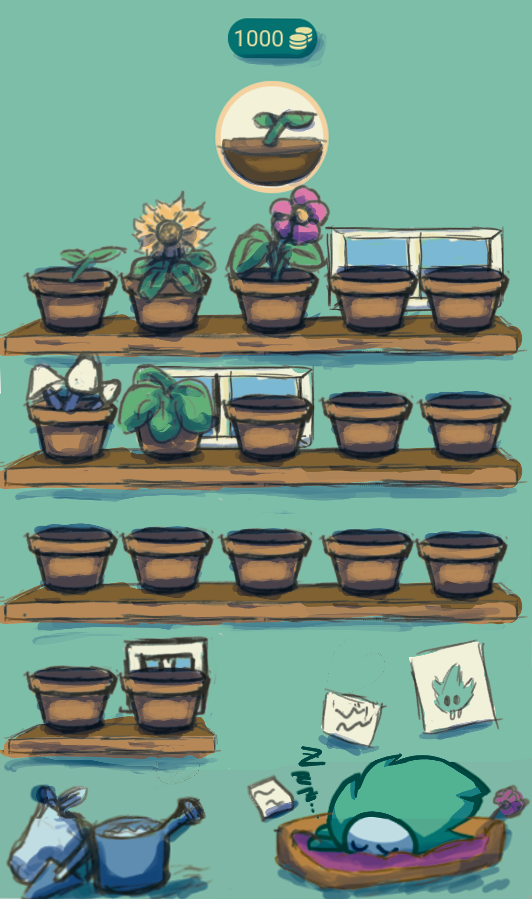
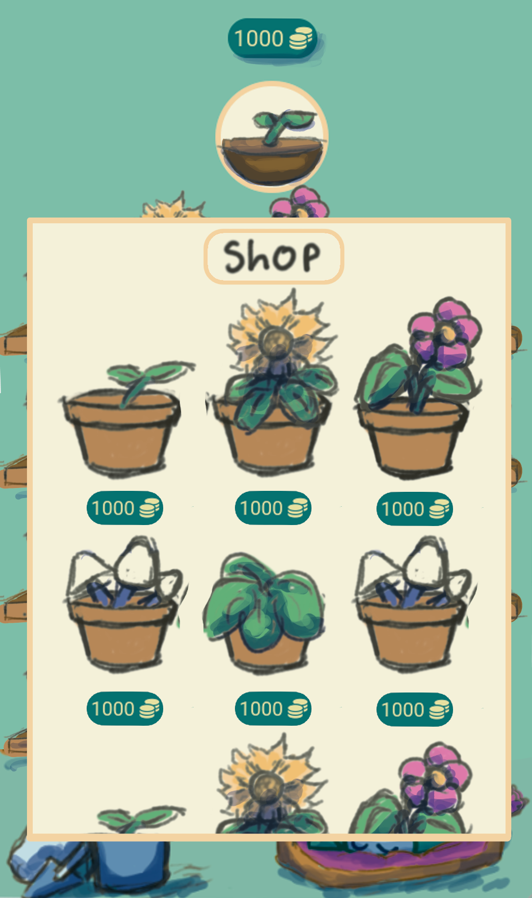

GreenPath
Donnez votre avis sur nos interfaces !

Page 2 / 3 : Jardin, Boutique et Mécaniques
1
Page Forêt / Jardin Virtuel
La page forêt est le cœur de GreenPath — votre jardin virtuel grandissant au fil de vos missions !

Page Forêt / Jardin virtuel
2
Page Boutique
La boutique vous permet d'acheter des plantes et objets décoratifs pour votre jardin avec vos coins gagnés.

Page Boutique de plantes
3
Mécaniques de Jeu
Voici quelques mécaniques de gameplay envisagées pour GreenPath. Dites-nous ce que vous en pensez !